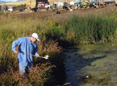

Education
Our goal is not to eliminate each and every mosquito; CMAD instead seeks to control them to reduce the likelihood of disease and as nuisance abatement. Rather than blanketing the District with pesticide all the time, we use an Integrated Pest Management (IPM) program consisting of surveillance, larvicide, and adulticide. Our Pesticide Discharge Management Plan (PDMP) has more information on the compounds we use to control mosquitoes.
surveillance
CMAD uses a variety of surveillance methods. At the start of each mosquito season, generally sometime in May, our field workers start dipping. They visit standing bodies of water and use a white cup on the end of a pole to dip out some water. Mosquito larva, although very tiny, will show up as dark specks or rods against the white cup. If larva are found, then the larvicide is applied.
Field workers use a white cup on the end of a pole to dip water to check for the presence of mosquito larvae.

Below are videos of field surveillance for mosquito larva and pupae.
Also in May we decide where to place our mosquito traps. Using a CO2 tank to attract the female mosquitoes, we trap them overnight once a week. The traps are collected the following morning and taken back to the lab where the mosquitoes are counted and then, by using a dissecting microscope and strong magnifying glasses, they are also divided into species. In our District, the Culex species of mosquito typically carries West Nile Virus and Western Equine Encephalitis.
More Information
Larvicide
Larvicide is our primary method to control mosquitoes; 80 percent of our abatement hours are spent checking standing water pools for mosquito larva and treating the water when we find the larva. We use different types of larvicide, depending on other organisms present in the water and on the size or surface area of the water. If the body of water is small enough and if fish or other aquatic residents are present, we use a product made from bacteria that targets only mosquito larva. In other cases, such as a large body of still water left after flooding, we'll use a pesticide mixed with a small amount of oil. This forms a very thin film on the surface of water that prevents the larva from getting oxygen to breathe, thus suffocating them, as well as poisoning the larva. This season, we will also use a spinosad compound to stop growth of the larva and prevent them from hatching into adults.
Adulticide
Currently, CMAD uses a truck-mounted fogger to treat adult mosquitoes. We use a product called Kontrol (permethrin). Click here for information on permethrin use in mosquito abatement.
Is fogging safe? Christopher Portier, director of the environmental toxicology program at the National Institute of Environmental Health Sciences in North Carolina, said, "...chemicals such as malathion, resmethrin and sumithrin have been used for years without noticeable toxic effects. They don't build up in the environment or the body like DDT. To get short term health problems, such as tremors, 'you'd have to literally drink the stuff."
Each year, our field workers receive training on the application of pesticides and are certified by the Utah Department of Agriculture and Food as applicators. The fogging machines are tested and calibrated each year to ensure they are delivering the target amount of pesticide at a specific vehicle speed (anywhere from 12 mph up to 23 mph). Please note that some of our fogging machines are designed to turn off the flow of pesticide solution yet still allow the motor on the fogging pump to continue running. This feature allows for better control of the application (avoiding bee hives, organic farms, etc.).
We have also added GPS tracking to our arsenal of tools to identify routes taken, environmental conditions, pesticide applied, and what time of night (for fogging) or day (for larviciding). The data collected will help us in identifying hotspots, track total amount of pesticide applied each season, and correlate applications with environmental conditions (wind speed and direction, air temperature, etc.).
Our goal is not eradication of mosquitoes but to control them to reduce their nuisance factor and the spread of disease. Fogging is done in the evening between dusk and midnight. This is when mosquitoes such as the Culex species are most active and therefore most likely to be killed by the pesticide. Bees and native pollinators return to their hives at dusk and so are not likely to be exposed to the pesticide. Kontrol breaks down quickly in our environment (less than a day).
Products Used for Mosquito Control
Below are the labels for the products we currently use for controlling mosquito larva and adults. The different formulations are used according to the variety of conditions we encounter when controlling mosquitoes.
We're adding two new products that will help to better control the Aedes mosquitoes that have become a nuisance around the Benson area.
Larvicides:
Adulticides: